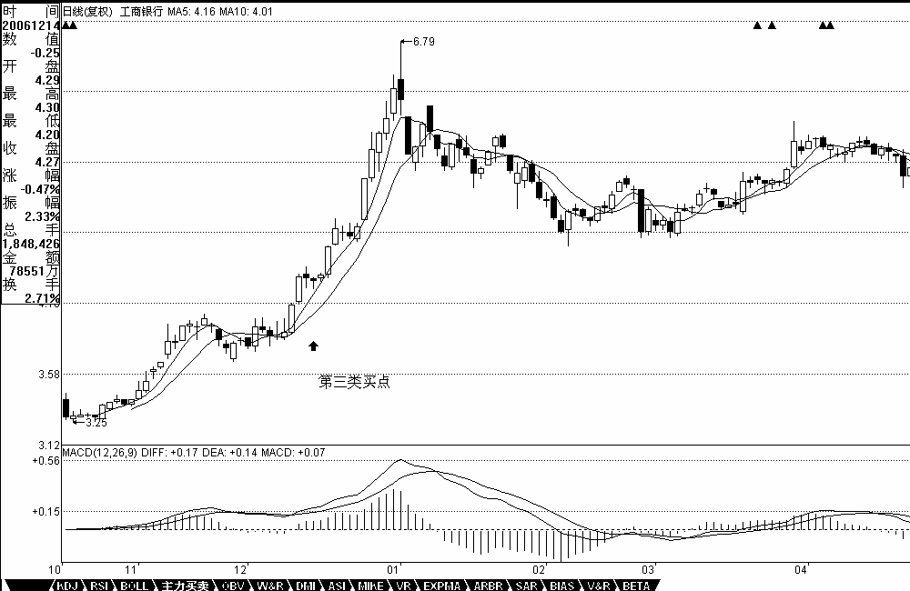
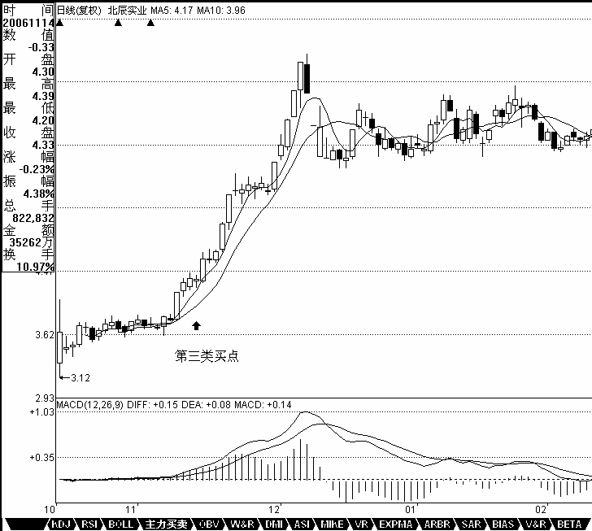

0424 - 教你炒股票20：缠中说禅走势中枢级别扩张及第三类买卖点¶
日期：(2007-01-05 15:23:22) 分类：[时政经济（缠中说禅经济学）]
前面已经很明确地指出，缠中说禅走势中枢由前三个连续次级别走势类型的重叠部分确定，其后的走势有两种情况：一、该走势中枢的延伸。二、产生新的同级别走势中枢。而在趋势里，同级别的前后缠中说禅走势中枢是不能有任何重叠的，这包括任何围绕走势中枢产生的任何瞬间波动之间的重叠。因此，如果三个连续次级别走势类型的重叠区间虽然不和前面的走势中枢有任何重叠，但围绕该中枢产生的波动触及前面走势中枢延续时的某个瞬间波动区间，这时候，就不能认为该走势类型是趋势，而只是产生一个更大级别的缠中说禅走势中枢。
这里，必须把两种情况严格区分。一、走势中枢以及其延伸。这种情况下，所有围绕走势中枢产生的前后两个次级波动都必须至少有一个触及走势中枢的区间。否则，就必然产生一个新的三次连续次级走势类型的重叠部分离开原来的走势中枢，这与走势中枢的延续矛盾。二、一个走势中枢完成前，其波动触及上一个走势中枢或延伸时的某个瞬间波动区间，由此产生更大级别的走势中枢。
一个简单的例子就能区别以上的情况，例如，一个股票开盘立刻封涨停，那么，只能算是一分钟级别上出现了走势中枢的延伸，无论这个延伸有多长时间，都不可能产生更大级别的走势中枢。如果该股票第二天开始继续开盘涨停，那么就形成一个一分钟级别上的趋势，这个趋势可以无限延伸下去，但只要依然只是只形成一分钟的走势中枢，无论能连续涨停多少天，都不足以形成即使是五分钟的走势中枢，除非中途有打开涨停的时候。还有一种特殊的情况，就是所谓的庄股，如果有一个庄家特别有毛病，每天就成交一次，每天的价位都一样，这样也只形成一个一分钟的走势中枢，大级别的中枢都不能形成。
换言之，走势中枢的延伸与不断产生新的走势中枢并相应围绕波动互不重叠而形成趋势，在这两种情况下，一定不可能形成更大级别的走势中枢。而要形成一个更大级别的走势中枢，必然要采取第三种的方式，就是围绕新的同级别走势中枢产生后的波动与围绕前中枢的某个波动区间产生重叠。由此可马上得到一个重要的定理：
缠中说禅走势级别延续定理一：在更大级别缠中说禅走势中枢产生前，该级别走势类型将延续。也就是说，只能是只具有该级别缠中说禅走势中枢的盘整或趋势的延续。
看看去年指数的走势，就知道该定理的重要。很多人总是说，怎么都涨那么多了还涨，明白这个定理，就知道，要这个市场跌，现在这种最多只出现过日线走势中枢的走势，在周线走势中枢出现前，不可能结束。而且，从去年8月份开始的走势，甚至连日线的走势中枢都没形成过，最多就是30分钟的，要结束这种走势，首先要形成日线的中枢。明白这个定理，就不会整天自己吓自己。这里由定理一很简单就能证明一个更重要的定理对走势改变给一个更精确、预先的界定：
缠中说禅走势级别延续定理二：更大级别缠中说禅走势中枢产生，当且仅当围绕连续两个同级别缠中说禅走势中枢产生的波动区间产生重叠。
这里来一个比喻就好理解了，缠中说禅走势中枢就如同恒星，和围绕该恒星转动的行星构成一个恒星系统。而两个同级别恒星系统要构成一个更大级别的系统，首先必然要至少是其中的外围行星之间发生关系，这就是定理二说的东西。
有了上面的定理，就可以很精确地讨论走势中枢的问题了：根据走势中枢的数学表达式：
A、B、C，分别的高、低点是a1\a2, b1\b2 , c1\c2，则中枢的区间就是[max（a2,b2,c2），min（a1,b1,c1）]。而中枢的形成无非两种，一种是回升形成的，一种是回调形成的。对于第一种有a1=b1,b2=c2；对第二种有a2=b2,b1=c1。但无论是哪种情况，中枢的公式都可以简化为[max（a2,c2），min（a1,c1）]。显然，A、C段，其方向与中枢形成的方向是一致的，由此可见，在中枢的形成与延伸中，由与中枢形成方向一致的次级别走势类型的区间重叠确定。例如，回升形成的中枢，由向上的次级别走势类型的区间重叠确定，反之依然。为方便起见，以后都把这些与中枢方向一致的次级别走势类型称为Z走势段，按中枢中的时间顺序，分别记为Zn等，而相应的高、低点分别记为gn、dn,定义四个指标,GG=max(gn), G=min(gn), D=max(dn), DD=min(dn)，n遍历中枢中所有Zn。特别地，再定义ZG=
min(g1、g2), ZD=max(d1、d2)，显然，[ZD，ZG]就是缠中说禅走势中枢的区间，由此有了如下定理：
缠中说禅走势中枢中心定理一：走势中枢的延伸等价于任意区间[dn，gn]与[ZD，ZG]有重叠。换言之，若有Zn，使得dn>ZG或gn<ZD，则必然产生高级别的走势中枢或趋势及延续。
缠中说禅走势中枢中心定理二：前后同级别的两个缠中说禅走势中枢，后GG < 前DD等价于下跌及其延续；后DD > 前GG等价于上涨及其延续。后ZG < 前ZD且后GG >= 前DD，或后ZD > 前ZG且后DD =< 前GG，则等价于形成高级别的走势中枢。
由定理一，可以得到第三类买卖点定理：一个次级别走势类型向上离开缠中说禅走势中枢，然后以一个次级别走势类型回试，其低点不跌破ZG，则构成第三类买点；一个次级别走势类型向下离开缠中说禅走势中枢，然后以一个次级别走势类型回抽，其高点不升破ZD，则构成第三类卖点。

【编者注：此图可能是当时的网友补充的】
例如，工商银行在12月14日构成典型的日线级别第三类买点；北辰实业在11月14日构成典型的日线级别第三类买点；000803在1月20日构成典型的日线级别第三类卖点。注意，第三类买卖点比第一、二类要后知后觉，但如果抓得好，往往不用浪费盘整的时间，比较适合短线技术较好的资金，但一定要注意，并不是任何回调回抽都是第三类买卖点，必须是第一次。而且，第三类买卖点后，并不必然是趋势，也有进入更大级别盘整的可能，但这种买卖之所以必然赢利，就是因为即使是盘整，也会有高点出现。操作策略很简单，一旦不能出现趋势，一定要在盘整的高点出掉，这和第一、二类买点的策略是一样的。

【编者注：此图可能是当时的网友补充的】
思考题一：第三类买卖点有可能和同级别的第二类买卖点重合吗？ 思考题二：工商银行在12月22日构成日线级别第三类买点吗？
本文评论获取自靠谱的方式，包含疑似禅师的回复数量：[21]
UID:[0] 昵称：[匿名] MM 日期：(2007-01-05 15:28:07)
沙发
UID:[1215172700] 昵称：缠中说禅 日期：(2007-01-05 15:30:38)
这新浪是不是人太多了，上来都困难。发了好几次都不行。大盘今天走势十分良好，典型的补涨走势。关键还是成分股，成分股也分一线、二线、三线的。现在一线的银行股等休息，二线就启动，十分正常，把握这节奏，就能玩多了轮，资金利用率也高了。
UID:[1215172700] 昵称：缠中说禅 日期：(2007-01-05 15:39:13)
今天给出了最标准的数学公式，把公式理解了，一切的分类就很清楚了，公式比语言要简单，关键理解好了。所有图形都符合的。你觉得不符合，一定是理解有问题，耐心点。
UID:[1215172700] 昵称：缠中说禅 日期：(2007-01-05 15:52:23)
各位耐心看，一边自己画图一边把下面一段啃下来，其实是很简单的：为方便起见，以后都把这些与中枢方向一致的次级别走势类型称为Z走势段，按中枢中的时间顺序，分别记为Zn等，而相应的高、低点分别记为gn、dn,定义四个指标,GG=max(gn),G=min(gn),D=max(dn),DD=min(dn)，n遍历中枢中所有Zn。特别地，再定义ZG= min(g1、g2),ZD=max(d1、d2)，显然，[ZD，ZG]就是缠中说禅走势中枢的区间，由此有了如下定理：缠中说禅走势中枢中心定理一：走势中枢的延伸等价于任意区间[dn，gn]与[ZD，ZG]有重叠。换言之，若有Zn，使得dn>ZG或gn<ZD，则必然产生高级别的走势中枢或趋势及延续。缠中说禅走势中枢中心定理二：前后同级别的两个缠中说禅走势中枢，后GG〈前DD等价于下跌及其延续；后DD〉前GG等价于上涨及其延续。后ZG<前ZD且后GG〉=前DD，或后ZD〉前ZG且后DD=<前GG，则等价于形成高级别的走势中枢。
UID:[1215172700] 昵称：缠中说禅 日期：(2007-01-05 15:57:29)
总书记 2007-01-05 15:48:58
请问楼主 我下面的分析对吗?600004在30分钟级别上:12141330-12281500构成下跌12211100-12251030形成一个缠中说禅中枢12271000-12281000形成第二个缠中说禅中枢其后走势不确定 因为一直还没有形成缠中说禅中枢工商银行现在是不是该考虑解套的时候了？昨天高价进的。非常谢谢楼主！
====
首先请不要学什么了，第一要学的是，必须遵守买卖的规则，一定只能在买点上买。为什么要追高，没有任何股票是值得追高的。在日线上，工行第三类买点出现后，至少站在日线级别就没有任何值得的买点。当然，站在5分钟或15分钟级别，下周会有一个第一类买点，但今天形成的中枢，将有很大的吸引力，目前已经形成两个中枢在5分钟等短线图上，目前最好的走势就是能围绕今天所形成的中枢消化压力，然后再找机会上攻。中线该股问题不大，短线就看这两个中枢的牵引与压力的化解了。
UID:[1215172700] 昵称：缠中说禅 日期：(2007-01-05 16:00:00)
[匿名] 新年好 2007-01-05 15:51:16
请稳缠姐，这段话中“为方便起见，以后都把这些与中枢方向一致的次级别走势类型称为Z走势段，按中枢中的时间顺序，分别记为Zn等，而相应的高、低点分别记为gn、dn,定义四个指标,GG=max(gn),G=min(gn),D=max(dn),DD=min(dn)，n遍历中枢中所有Zn。特别地，再定义ZG= min(g1、g2),ZD=max(d1、d2)，”的GG=max(gn),G=min(gn),D=max(dn),DD=min(dn)都是什么意思，代表什么指标？
===
这什么指标都不是，是 本ID定义的，定义的意思文章中已经很清楚了，请耐心一个字一个字地磨清楚。
UID:[1215172700] 昵称：缠中说禅 日期：(2007-01-05 16:38:35)
[匿名] 新年好 2007-01-05 16:29:40
缠姐给讲一讲离开和回到中枢吧？我怎么越来越糊涂了。
===
怎么会糊涂，这么明确的分类，总共三种情况，好好研究清楚。
UID:[1215172700] 昵称：缠中说禅 日期：(2007-01-05 16:40:17)
[匿名] WHQ999 2007-01-05 16:27:55
感谢缠妹.这两天已经进了二线蓝筹了,跟您学到了好多东西,但心态还靠各位自己锻炼了,哈哈
===
这个节奏 就对了，但一定要是成分股，这样容易把握。非成分的机会要到以后。另外，一线成分股也是有机会的，下跌太多后就可以进了，这类个股会反复炒的。
UID:[1215172700] 昵称：缠中说禅 日期：(2007-01-05 16:41:22)
[匿名] 老老没用 2007-01-05 16:39:37
第一类买卖点在级别的意义上好理解。时间段上呢？除了新股和经历漫长熊市的股，后入市的人很难找到第一类买点。起码在日线的级别上。请教缠姑娘。谢谢！
====
日线上是少见，但二类、三类，到处都是，没人告诉你一定要第一类的。
UID:[1215172700] 昵称：缠中说禅 日期：(2007-01-05 16:52:13)
各位不要把东西混了，中枢的离开返回是针对围绕中枢的运动说的，这里研究的是中枢自身的变化，也就是中枢延续与产生新中枢以及产生更高级别的中枢这三种情况的问题。三种情况，有最严格的定义，把这些情况给搞清楚，然后多看图去印证。
UID:[1215172700] 昵称：缠中说禅 日期：(2007-01-05 16:53:44)
[匿名] 学行 2007-01-05 16:52:00
000803在1月20日构成典型的日线级别第三类卖点？是不是 笔误？
===
第三类卖点，其后就出现大幅度的跳水，十分典型。
UID:[1215172700] 昵称：缠中说禅 日期：(2007-01-05 17:02:49)
[匿名] 带套操作 2007-01-05 16:45:23
MM，您说的中线指的是几个月？如600832您说过过了压力线则中线行情展开，工行中线没问题等等，望指教，谢谢！
===
中线就是在周线级别上，中短线指日线级别，短线指30分钟，超短指5分钟或1分钟的最小级别。600832，昨天告诉你一个关键的位置11。58，今天没有跌破，是好事，12。3到12。6是短线压力区域。中线压力是12。43的120周线，因此目前面临周线与日线的压力区，有反复很正常。最终突破是没问题的，只是时间快慢的问题。
UID:[1215172700] 昵称：缠中说禅 日期：(2007-01-05 17:11:25)
[匿名] 带套操作 2007-01-05 16:51:31
把工行当深发展了，中线到春节前，天天研读MM的老帖，受益匪浅。可惜还是被贪字套住了，惭愧！
===
对于日线上上涨过猛的股票，看回调打短差就要看小级别的图。而且一般股票上涨一倍后都有压力，特别是大盘的。不过中线问题不大，耐心点，有机会可以打点短差，反抽是有的。另外，打下来对人寿的开盘也有一定的压制，大家都希望能买到好价位，如果工行站8元，人寿还不开了60元？这样大家都别玩了。无论是二线成分股的启动以及人寿的开盘，以及中行的禁售上市，都要求工行等跌，所以很正常的事情，而且是不难预见的事情，这种小插曲，对工行的中线走势是没有影响的。
UID:[1215172700] 昵称：缠中说禅 日期：(2007-01-05 17:13:27)
心宇 2007-01-05 17:04:14
新手该如何开始？先学习，是不是等学完了股市早凉了，不学就进去就是……缠mm，可咋好呢？
===
学好一招就可以了，例如，你把今天说的第三类买点搞清楚，在牛市中足以战胜95%的人。
UID:[1215172700] 昵称：缠中说禅 日期：(2007-01-05 17:15:02)
先下，再见。有问题请先放下来。
UID:[1215172700] 昵称：缠中说禅 日期：(2007-01-05 17:25:31)
[匿名] 新年好 2007-01-05 16:08:22
请问缠姐，“工商银行在12月14日构成典型的日线级别第三类买点”；是不是说工商银行在30分钟线上12.12,10:00-12.15,10:00形成了一个中枢，再根据“由定理一，可以得到第三类买卖点定理：一个次级别走势类型向上离开缠中说禅走势中枢，然后以一个次级别走势类型回试，其低点不跌破ZG，则构成第三类买点；一个次级别走势类型向下离开缠中说禅走势中枢，然后以一个次级别走势类型回抽，其低点不升破ZD，则构成第三类卖点。”12.14号如果是第三类买点的话，在30分钟线这天应该是离开中枢后的一个回试，我怎么看不出来啊。并没有离开中枢阿。请缠姐指教。
====
临走回答你，搞清楚，是看哪个级别的。对日线中枢来说，次级别是30分钟，而次级别的完成，需要再次级别，也就是5分钟图上呈现3段走势类型。这在工行14那天有着完美的表现。那天14。40左右刚好完成这三段5分钟的走势类型，你可以精确地找到4。2元的买点。请把这三层次的级别关系搞清楚。再见。
UID:[0] 昵称：[匿名] 罗锅 日期：(2007-01-05 18:18:24)
2007-01-05 18:12:15 ，
工商银行在12月14日构成典型的日线级别第三类买点；北辰实业在11月14日构成典型的日线级别第三类买点；000803在1月20日构成典型的日线级别第三类卖点。注意，第三类买卖点比第一、二类要后知后觉，但如果抓得好，往往不用浪费盘整的时间，比较适合短线技术较好的资金，但一定要注意，并不是任何回调回抽都是第三类买卖点，必须是第一次。而且，第三类买卖点后，并不必然是趋势，也有进入更大级别盘整的可能，但这种买卖之所以必然赢利，就是因为即使是盘整，也会有高点出现。操作策略很简单，一旦不能出现趋势，一定要在盘整的高点出掉，这和第一、二类买点的策略是一样的。靠，短线短则一两天，长则四五天，就要出手了，还等你形成趋势啊，趋势就要两个中枢，有那个功夫早操作十几个来回了。如果没有耐心持股的朋友，缠女这套技术分析理论毫无价值。不过缠女的一些观点倒是可以吸收。
===
你大纱帽呀！！！！！！你想不持股就要小级别的！！！！！！！！！！！！！！！！数学妹妹不是早说了？？？？？？？？？？？？？？？你用一分钟的图，你还忙不过来呀！！！！！！！！！！！！！！！！！！！！按俺的理解！！！！！！！！！！！！！！！！！！！数学妹妹的买点是可以精确到5分钟甚至1分钟的！！！！！！！！！！！！！！！！！！！！！！！！！！！！！！
UID:[0] 昵称：[匿名] 罗锅 日期：(2007-01-05 18:23:52)
数学妹妹晚上还来吗？？？？？？？？？？？？？今天可是周末呀！！！！！！！！！！！！！！数学妹妹是不是又去腐败啦？？？？？？？？？？？？？？？？？？？？？？？？？？
UID:[0] 昵称：[匿名] Q 日期：(2007-01-05 21:46:57)
QIANG REN
UID:[0] 昵称：[匿名] 公子白 日期：(2007-01-05 22:24:30)
问好`
UID:[0] 昵称：[匿名] 路人甲 日期：(2009-03-28 21:19:00)
不知道上面那位新浪网友是否已经完全明白或者自认是炒股高手。我只知道，缠主准确地说出了07年初只是年市的开始，完成有可能涨到6000点，最高点是6124.04点然后又说了只要不重新跌回1558，就是又一次最好的买点，从1664.93点以后反弹了多少点？今天是看了几个星期缠论后的第一次回复，向缠主和各位学长问好！